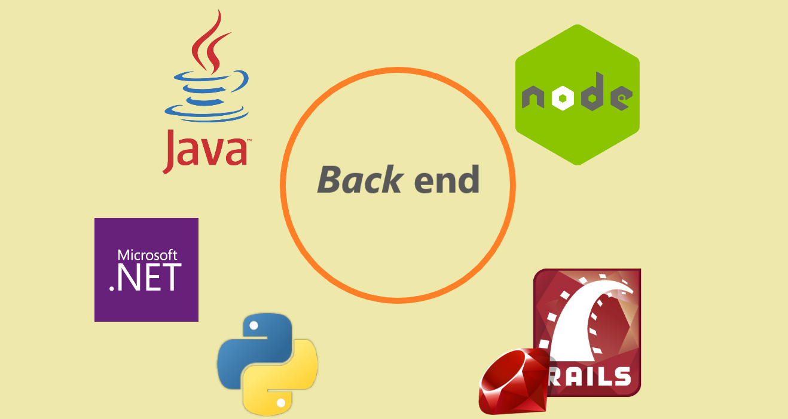

Web development
Веб-розробка — процес створення веб-сайтів або веб-додатків. Основними етапами процесу є веб-дизайн, верстка сторінок, програмування для веб на стороні клієнта і сервера, а також конфігурування веб-сервера. Веб-розробка сладається з: Front end'y та Back end'y
Front end
Front end — це інтерфейс для взаємодії між користувачем і back end. Front end сладається з:
HTML
HTML (англ. HyperText Markup Language, укр. Мова розмітки гіпертекстових документів) — стандартна мова розмітки веб-сторінок в Інтернеті. Більшість веб-сторінок створюються за допомогою мови HTML (або XHTML). Документ HTML оброблюється браузером та відтворюється на екрані у звичному для людини вигляді. HTML є похідною мовою від SGML, успадкувавши від неї визначення типу документа та ідеологію структурної розмітки тексту. Попри те, що HTML — штучна комп'ютерна мова, вона не є мовою програмування. HTML разом із каскадними таблицями стилів та вбудованими скриптами — це три основні технології побудови веб-сторінок.
CSS
CSS (англ. Cascading Style Sheets, укр. Каскадні таблиці стилів) — спеціальна мова, що використовується для опису зовнішнього вигляду сторінок, написаних мовами розмітки даних. Найчастіше CSS використовують для візуальної презентації сторінок, написаних HTML та XHTML, але формат CSS може застосовуватися до інших видів XML-документів. Специфікації CSS були створені та розвиваються Консорціумом Всесвітньої мережі. CSS має різні рівні та профілі. Наступний рівень CSS створюється на основі попередніх, додаючи нову функціональність або розширюючи вже наявні функції. Рівні позначаються як CSS1, CSS2 та CSS3. Профілі — сукупність правил CSS одного або більше рівнів, створені для окремих типів пристроїв або інтерфейсів. Наприклад, існують профілі CSS для принтерів, мобільних пристроїв тощо. CSS (каскадна або блочна верстка) прийшла на заміну табличній верстці веб-сторінок. Головна перевага блочної верстки — розділення змісту сторінки (даних) та їхньої візуальної презентації.
JS
JavaScript (JS) — динамічна, об'єктно-орієнтована прототипна мова програмування. Реалізація стандарту ECMAScript. Найчастіше використовується для створення сценаріїв веб-сторінок, що надає можливість на стороні клієнта (пристрої кінцевого користувача) взаємодіяти з користувачем, керувати браузером, асинхронно обмінюватися даними з сервером, змінювати структуру та зовнішній вигляд веб-сторінки. JavaScript класифікують як прототипну (підмножина об'єктно-орієнтованої), скриптову мову програмування з динамічною типізацією. Окрім прототипної, JavaScript також частково підтримує інші парадигми програмування (імперативну та частково функціональну) і деякі відповідні архітектурні властивості, зокрема: динамічна та слабка типізація, автоматичне керування пам'яттю, прототипне наслідування, функції як об'єкти першого класу.
Backend — це «задня» частина сайту, яка невидима відвідувачеві, але яка безпосередньо відповідає за роботу сайту. Бекенд і фронтенд сайту пишуться на різних мовах програмування: для бекенду характерні мови PHP, Python, Ruby, Go, а для фронтенду — JavaScript, HTML, CSS. Тому у розробників сайтів є поділ спеціалізацій — програмісти бекенду і фронтенду.
